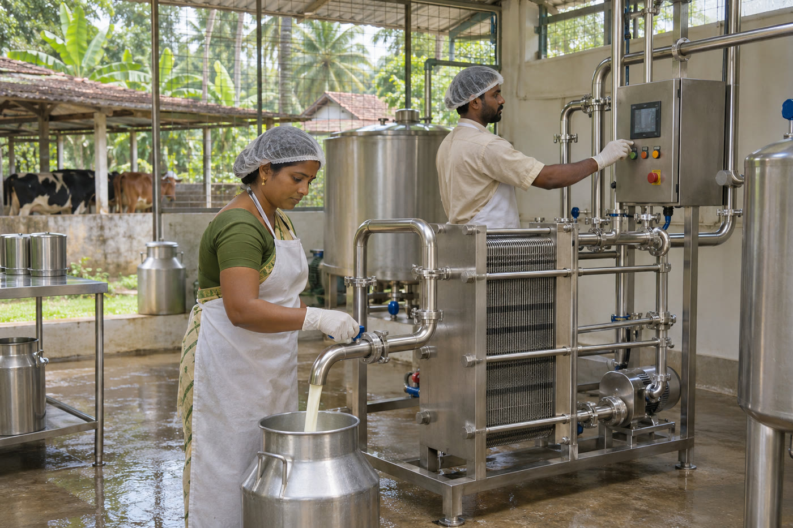

Area of focus · Surabhi
02 / Area of focus
Connecting farm-level production with a considered dairy value chain.

A connected approach
to development.
Milk collection, chilling, processing, distribution, and product development form part of the society’s registered objectives. The focus is a connected approach that considers farmers, product quality, and the infrastructure needed along the way.
Relevant objectives
- Explore milk collection and chilling infrastructure.
- Support processing, distribution, and dairy product development.
- Encourage responsible quality practices across the value chain.
There is more we can grow
People. Purpose. Possibility.Discover the possibilities of co-operation, innovation, and sustainable development.
Get in touchA shared ambition. A collective future.Let’s begin a conversation ↗